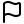
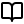
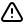
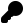

Poslední slotová kapitola. Slot 6 padá zhruba v polovině zkoušek a když padne, vypadá takhle (zkouška 02.06.2021, znovu doložena 1. 6. 2026):

Ukázka zkouškového zadání (EN, 1:1)“Reduce the domains to be arc consistent. Record the steps of the algorithm (the queue content prior to the revision of each arc).”
Je to nejmechaničtější úloha celé zkoušky — žádný důkaz, žádný nápad, jen pečlivé oditerování algoritmu AC-3. Kapitola K6 ji rozkládá na tři kroky: dnes pojmy (co je CSP a kdy je hrana konzistentní), v [L6.2] procedura REVISE (jak nekonzistenci opravit škrtáním hodnot) a v [L6.3] algoritmus AC-3 s frontou hran — tam si přesně tohle zadání celé propočítáš.
Začni mini-hlavolamem ze slidů: dvě neznámé $x$ a $y$, každá smí nabývat hodnot $\{3, 4, 5\}$, a dvě podmínky: $x \ge y$ a $y > 3$.
Řešení jsou dvojice splňující obě podmínky: $(x,y) \in \{(4,4),\ (5,4),\ (5,5)\}$. A stavební kameny: proměnné ($x$, $y$), jejich domény — konečné množiny povolených hodnot ($\{3,4,5\}$) — a omezení ($x \ge y$, $y > 3$). Přesně tahle trojice definuje CSP.
Formálně (slide 17, EN 1:1): “Constraint Satisfaction Problem (CSP) is defined by the triplet $(X, D, C)$, where $X = \{x_1, \ldots, x_n\}$ is a finite set of variables, $D = \{D_1, \ldots, D_n\}$ is a finite set of domains of variables, $C = \{C_1, \ldots, C_t\}$ is a finite set of constraints.” Doména $D_i$ je konečná množina všech možných hodnot $x_i$; omezení $C_i$ je dvojice $(S_i, R_i)$, kde $S_i \subseteq X$ a $R_i$ je relace nad proměnnými z $S_i$ (tj. množina povolených kombinací hodnot). Solution (řešení) je úplné přiřazení hodnot z domén všem proměnným takové, že jsou splněna všechna omezení — je to rozhodovací problém a obecně je NP-úplný. (Varianta s účelovou funkcí $f(X)$ se jmenuje CSOP — constraint satisfaction optimization problem; u zkoušky Slotu 6 se nepotkává, řeší se čistá feasibilita.)
Jak by ses hlavolamu zhostil bez zkoušení všech $3 \times 3 = 9$ kombinací? Klíčová operace constraint programmingu je propagation (propagace omezení): omezení se použije na škrtání hodnot z domén, které nemohou být v žádném řešení.
Z $y > 3$ plyne, že $y = 3$ nemůže být v žádném řešení → $D_y = \{4, 5\}$. A teď s novou doménou $y$: pro $x = 3$ neexistuje žádné $y \in \{4,5\}$ s $x \ge y$ → $D_x = \{4, 5\}$. Víc už žádné omezení samo o sobě neškrtne — projdi si to v krokovači níže.
Ne — $x = 4$, $y = 5$ porušuje $x \ge y$, a přitom obě hodnoty v doménách přežily (každá má jiného „partnera“, se kterým funguje). Slide 22 to říká přesně: “propagation alone is not enough — the product of the domains (including infeasible $x = 4$, $y = 5$) is a superset of the solution”. Kartézský součin zredukovaných domén je jen nadmnožina množiny řešení; zbytek dořeší prohledávání (search) s větvením. Pro zkouškovou úlohu Slotu 6 je ale podstatný právě jen ten propagační krok — a k němu potřebujeme přesné lokální kritérium, kdy se smí hodnota škrtnout. To kritérium je arc consistency.
Hranová konzistence se definuje pro binární CSP — každé omezení je binární relace, tj. váže dvojici proměnných ($x_1 = x_2$, $x \ge y$, …). To není omezující: obecný ($n$-ární) CSP lze na binární převést (slide 25). Binární CSP se reprezentuje digrafem (orientovaným grafem) $G$:
Čtyři: každé ze dvou omezení dává dvě orientované hrany. $x_1 = x_2$ dává $(x_1, x_2)$ a $(x_2, x_1)$; $x_2 + 1 = x_3$ dává $(x_2, x_3)$ a $(x_3, x_2)$. Mezi $x_1$ a $x_3$ žádné omezení není, tedy ani hrana. (A kdyby mezi jednou dvojicí proměnných bylo omezení víc, hrany jsou pořád jen dvě — jedna na každý směr.)
Proč zrovna orientované hrany, když omezení samo žádný směr nemá? Protože směr hrany říká, čí doménu touto hranou kontrolujeme — a hned uvidíš, že výsledek kontroly na směru závisí.
Partner pro $a \in D_2$ musí být $b = a + 1$: pro $a = 1$ je to $b = 2$ ✓, pro $a = 2$ je to $b = 3$ ✓, ale pro $a = 3$ by muselo být $b = 4 \notin D_3$ ✗. Hodnota $3$ v $D_2$ tedy nemá podporu. Obráceně partner pro $b \in D_3$ je $a = b - 1$: pro $b = 2, 3$ existuje ✓, pro $b = 1$ by muselo být $a = 0 \notin D_2$ ✗ — bez podpory je hodnota $1$ v $D_3$. Hodnota bez partnera nemůže být v žádném řešení.
Přesně tohle „mít partnera“ je celá definice (slide 25, EN 1:1):

Definice (slide 25, EN 1:1)“Arc $(x_i, x_j)$ is Arc Consistent (AC) iff for each value $a \in D_i$ there exists $b \in D_j$ such that the assignment $x_i = a$, $x_j = b$ meets all binary constraints for the variables $x_i, x_j$. A CSP is Arc Consistent iff all arcs are arc consistent.”
Hodnotě $b$, která s $a$ splní omezení, se říká support (podpora). Slovy: hrana $(x_i, x_j)$ je konzistentní, když každá hodnota v doméně počátečního uzlu $x_i$ má v doméně koncového uzlu $x_j$ aspoň jednu podporu. V try-otázce výše jsi tedy zjistil, že hrana $(x_2, x_3)$ není AC (hodnota $3 \in D_2$ je bez podpory) a hrana $(x_3, x_2)$ také ne (hodnota $1 \in D_3$). Pozor na čtení: hrana $(x_i, x_j)$ mluví o hodnotách v $D_i$ — kontroluje se doména ocasu hrany, doména hlavy jen dodává podpory.
A teď klíčová jemnost. Slide 25 (EN 1:1): “AC is oriented — AC of arc $(x_i, x_j)$ does not imply AC of arc $(x_j, x_i)$.” Prohlédni si tři příklady s omezením $x_1 \le x_2$ (po vzoru slidu 25; konkrétní domény jsou vlastní volba — slide je má jen v obrázku):
① $D_1 = \{2,3\}$, $D_2 = \{1,2\}$: hrana $(x_1,x_2)$ není AC — $a = 3$ nemá v $D_2$ podporu $b \ge 3$; hrana $(x_2,x_1)$ není AC — $b = 1$ nemá podporu $a \le 1$. Žádná hrana AC.
② $D_1 = \{2,3\}$, $D_2 = \{1,3\}$: $(x_1,x_2)$ AC — $2 \le 3$ ✓ i $3 \le 3$ ✓; $(x_2,x_1)$ není AC — $b = 1$ je bez podpory. Jen $(x_1,x_2)$ AC — tady vidíš orientovanost naživo.
③ $D_1 = \{1,2\}$, $D_2 = \{2,3\}$: každé $a \in \{1,2\}$ má podporu $b = 2$; každé $b \in \{2,3\}$ má podporu $a = 1$. Obě hrany AC.
Celý CSP je arc consistent, právě když jsou AC všechny hrany jeho grafu — v příkladu výše tedy jen instance ③. Zkouškové zadání „reduce the domains to be arc consistent“ chce přesně tohle: škrtat hodnoty bez podpory tak dlouho, až jsou všechny hrany AC. Jak škrtat systematicky (procedura REVISE) se naučíš v [L6.2] a jak u toho nezešílet z opakovaných kontrol (fronta algoritmu AC-3) v [L6.3].

Pozor: dvě klasické chyby u hranové konzistence
Key takeaways — L6.1“CSP with variables and domains: $x_1 \in \{1, 2, 3\},\ x_2 \in \{1, 2, 3\},\ x_3 \in \{2, 3\}$ and constraints $x_1 > x_2,\ x_2 \ne x_3,\ x_2 + x_3 > 4$.”
(Instrukce vlastní — na slidu instance pokračuje aplikací procedury REVISE, tu potkáš v [L6.2]:) Draw the constraint digraph. For each arc decide whether it is arc consistent with respect to the initial domains; for every inconsistent arc list the value(s) without support. Is the CSP arc consistent?
Tři proměnné s doménami, tři binární omezení — pozor, dvě z nich ($x_2 \ne x_3$ a $x_2 + x_3 > 4$) váží stejnou dvojici proměnných. Úkol: nakreslit graf omezení a u každé orientované hrany rozhodnout konzistenci (zatím nic neškrtáme — jen kontrolujeme).
Nejdřív hrany: kolik jich bude, když dvě omezení sdílejí dvojici $\{x_2, x_3\}$? Pak mechanicky: pro hranu $(x_i, x_j)$ projdi každou hodnotu $a \in D_i$ a hledej podporu $b \in D_j$ — ta musí splnit všechna omezení mezi $x_i$ a $x_j$ najednou (definice říká „all binary constraints“). Nezapomeň na oba směry každé dvojice.
Graf. Omezení jsou mezi dvojicemi $\{x_1, x_2\}$ a $\{x_2, x_3\}$ → hrany $(x_1, x_2), (x_2, x_1), (x_2, x_3), (x_3, x_2)$ — čtyři, i když omezení jsou tři: obě omezení nad $\{x_2, x_3\}$ sdílejí tutéž dvojici hran a podpora musí splnit obě současně.
Kontrola hran (podporu hledáme pro každou hodnotu ocasu):
CSP arc consistent není — tři hrany ze čtyř jsou nekonzistentní. (Kontrola proti slidu 27: tabulka revizí tam začíná škrtnutím hodnoty $1$ z $D_1$ na hraně $(x_1, x_2)$ a u zbylých hran uvádí stavy non-AC / non-AC / AC — sedí. Jak se z téhle diagnózy stane škrtání, je obsah [L6.2].)
“Let us consider the CSP problem given by:
Reduce the domains to be arc consistent.
Record the steps of the algorithm (the queue content prior to the revision of each arc).”
Dnešní (vlastní) instrukce — plné zkouškové řešení s frontou tě čeká v [L6.3]; tady udělej první krok: (i) nakresli graf omezení, (ii) u každé hrany rozhodni, zda je vůči počátečním doménám AC, (iii) u nekonzistentních hran vypiš hodnoty bez podpory.
Zkoušková instance Slotu 6: tři proměnné, všechny domény $\{1,2\}$, omezení $x_1 = x_2$ a $x_2 = x_3 + 1$. Originál chce celý běh AC-3 se záznamem fronty; dnes děláme jen diagnózu konzistence — přesně tu, kterou AC-3 v [L6.3] zmechanizuje.
Dvě omezení → kolik hran? U rovnosti $x_1 = x_2$ je podpora hodnoty $a$ prostě $b = a$. U $x_2 = x_3 + 1$ si pro každý směr hrany nejdřív napiš vzorec podpory ($b$ jako funkci $a$) — a teprve pak dosazuj; tady se nejsnáz chybuje (viz danger box výše).
(i) Graf: hrany $(x_1, x_2), (x_2, x_1)$ pro $x_1 = x_2$ a $(x_2, x_3), (x_3, x_2)$ pro $x_2 = x_3 + 1$ — celkem 4.
(ii)+(iii) Diagnóza (omezení čteme doslovně: $x_2 = x_3 + 1$):
CSP tedy AC není; škrtat se budou hodnoty $1$ z $D_2$ a $2$ z $D_3$ (a rovnost $x_1 = x_2$ pak strhne i doménu $D_1$ — jak přesně a v jakém pořadí, to je běh AC-3 v [L6.3]).
Poznámka k dochovanému ručnímu řešení: sken zkoušky škrtá zrcadlové hodnoty ($x_2 = 2$, $x_3 = 1$, $x_1 = 2$; zůstane $x_1 = x_2 = 1$, $x_3 = 2$) — to odpovídá čtení $x_3 = x_2 + 1$, zatímco tištěné zadání říká $x_2 = x_3 + 1$. Na metodě se nemění nic, jen se role hodnot $1$ a $2$ prohodí. U zkoušky čti směr rovnice dvakrát — a klidně si k hraně rovnou napiš vzorec podpory.